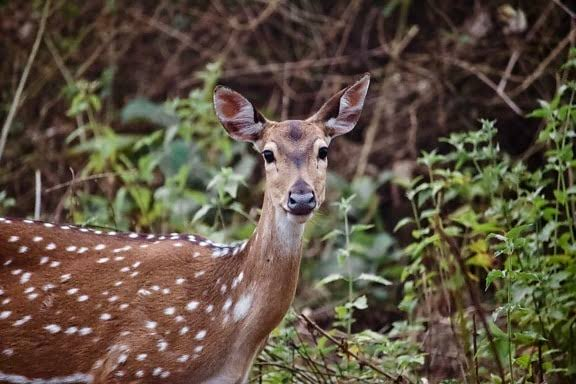

Atlas de la biodiversité du Loir-et-Cher : Sologne, Perche et Vallées

Cervus elaphus
Le Cerf élaphe (Cervus elaphus) est l’un des plus grands mammifères terrestres sauvages présents en France. Emblématique des grandes forêts européennes, il est particulièrement connu pour sa silhouette majestueuse, ses bois imposants chez le mâle et son brame spectaculaire à l’automne.
En France, on le rencontre principalement dans les grands massifs forestiers, les forêts de plaine et les régions où alternent bois, clairières, prairies et cultures. Il est notamment bien présent en Sologne, vaste région naturelle du Centre-Val de Loire caractérisée par ses forêts, ses landes, ses étangs et ses milieux humides.
Le cerf joue un rôle important dans les écosystèmes forestiers. Par son alimentation, ses déplacements et son comportement, il participe au fonctionnement des milieux naturels. Il constitue également une espèce emblématique du patrimoine naturel et culturel de la Sologne.
Le cerf élaphe appartient à la famille des Cervidés, comme le chevreuil et le daim. Il se distingue toutefois de ces deux espèces par sa taille, sa morphologie, son comportement social et ses bois.
Le cerf élaphe appartient à la famille des mammifères ruminants. Il possède un système digestif adapté à la consommation de végétaux, composé notamment d'un estomac à plusieurs compartiments.
Le nom « cerf élaphe » désigne l'espèce dans son ensemble. Le mâle adulte est appelé cerf, la femelle biche et le petit faon.
Le terme « grand gibier » est également utilisé pour désigner cette espèce dans le contexte de la chasse et de la gestion de la faune sauvage.
Le cerf élaphe possède un corps puissant et élancé, adapté à la course et aux déplacements sur de longues distances. Ses membres sont longs et solides, son encolure est relativement développée et sa tête est allongée.
Il présente un dimorphisme sexuel marqué : le mâle est généralement beaucoup plus grand et plus lourd que la femelle. Il porte également des bois qui peuvent atteindre une taille impressionnante.
Les dimensions varient selon le sexe, l'âge, la qualité du milieu et les ressources alimentaires disponibles.
| Caractéristique | Cerf adulte | Biche adulte |
|---|---|---|
| Hauteur au garrot | Environ 1,20 à 1,50 m | Environ 1,00 à 1,25 m |
| Longueur du corps | Environ 1,70 à 2,50 m | Environ 1,60 à 2,10 m |
| Poids | Environ 120 à 250 kg | Environ 70 à 130 kg |